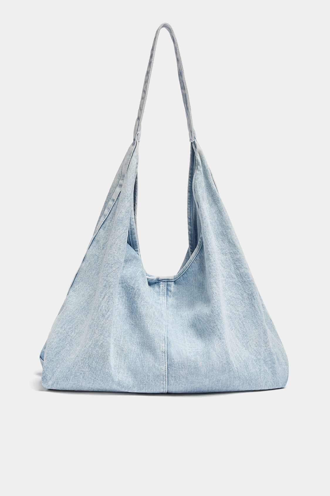
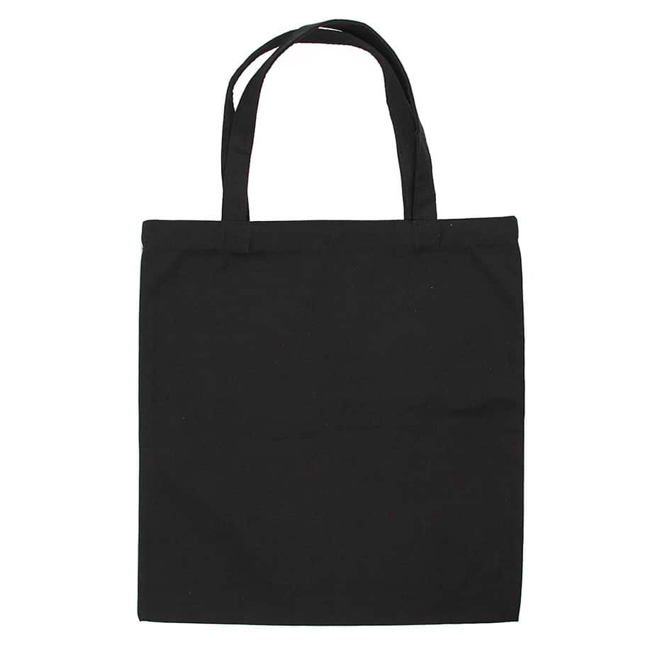
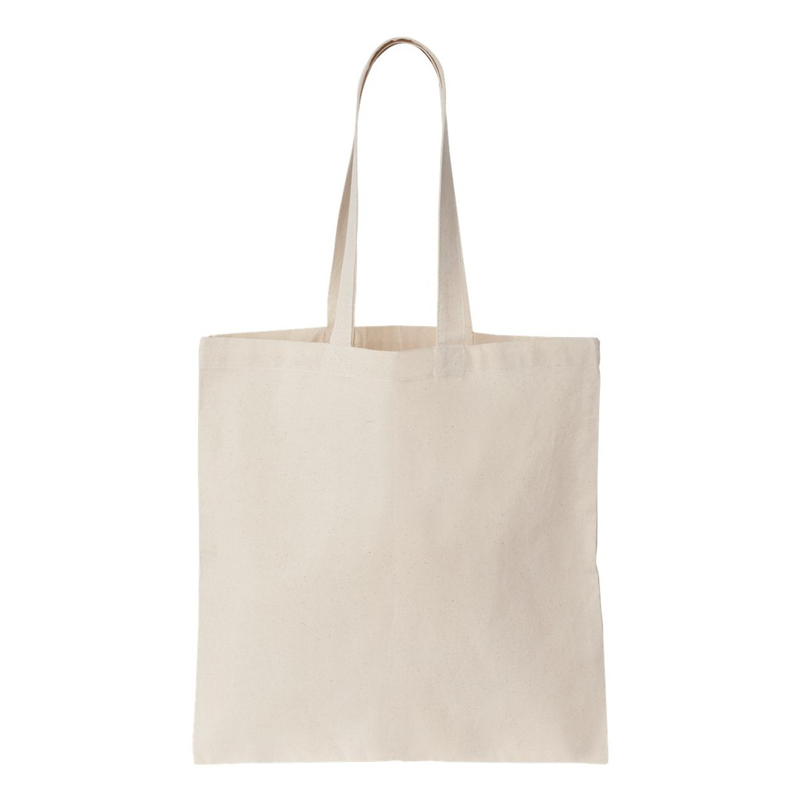

OUR PRODUCTS

1. Tote Bag Jeans.
These tote bags are crafted from recycled or upcycled denim jeans, giving them a distinct and eco-friendly appeal. The bags often retain the original texture, color, and stitching of the denim fabric, showcasing a rugged and casual look. They may feature pockets from the jeans for added functionality and a unique design. The durable nature of denim makes these tote bags sturdy and suitable for everyday use. Additionally, the repurposing of denim jeans adds a touch of sustainability to the fashion accessory.

2. Tote Bag Plain Black.
The tote bag is usually made from a durable and lightweight material, commonly canvas, cotton, nylon, or a blend of these fabrics. The choice of material ensures both strength and flexibility, making the bag suitable for carrying various items.The bag is a solid, deep black color, providing a timeless and elegant appearance. The lack of patterns or designs makes it a versatile accessory that can easily complement different outfits and styles.

3. Tote Bag Plain White.
The tote bag is usually crafted from a durable and lightweight material such as canvas, cotton, nylon, or a blend of materials. This choice ensures both strength and flexibility, making the bag suitable for various uses.The bag is a solid, pristine white color, creating a minimalist and chic appearance. The absence of patterns or additional colors makes it a versatile accessory that can easily complement different outfits, offering a sense of purity and sophistication.
4. Tote Bag Custom Made
The choice of material for a custom-made tote bag can vary based on personal preferences. Common materials include canvas, cotton, denim, leather, or even sustainable and eco-friendly options. The selection often depends on factors such as durability, texture, and the desired aesthetic.The design of a custom tote bag is entirely personalized according to the customer's specifications. This may involve selecting specific colors, patterns, or even incorporating custom graphics, logos, or artwork. The design process allows for creativity and individual expression, making each bag a one-of-a-kind piece.